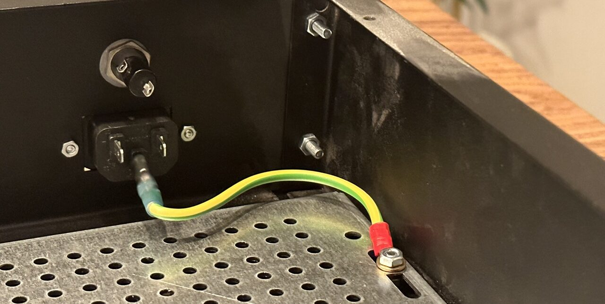
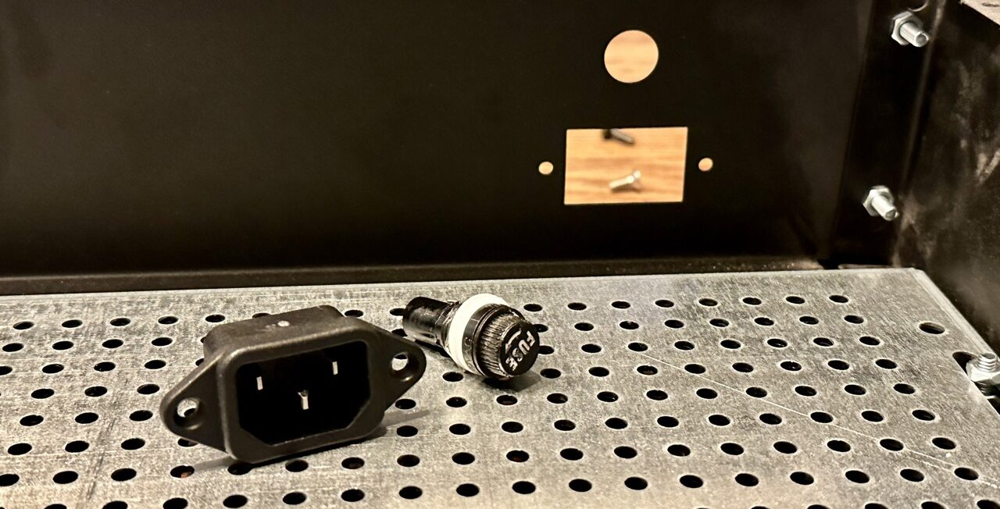
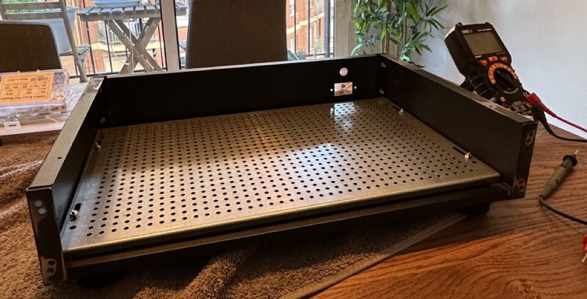
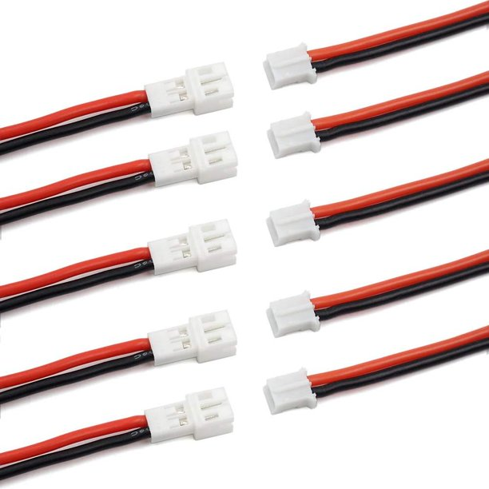
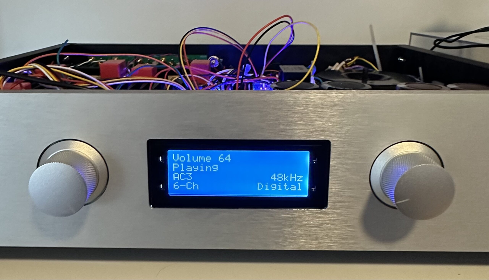
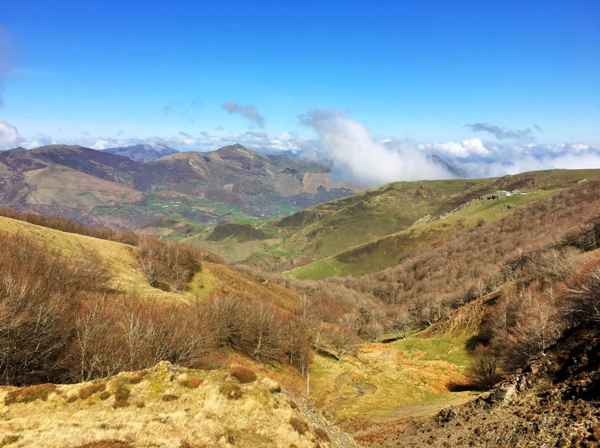
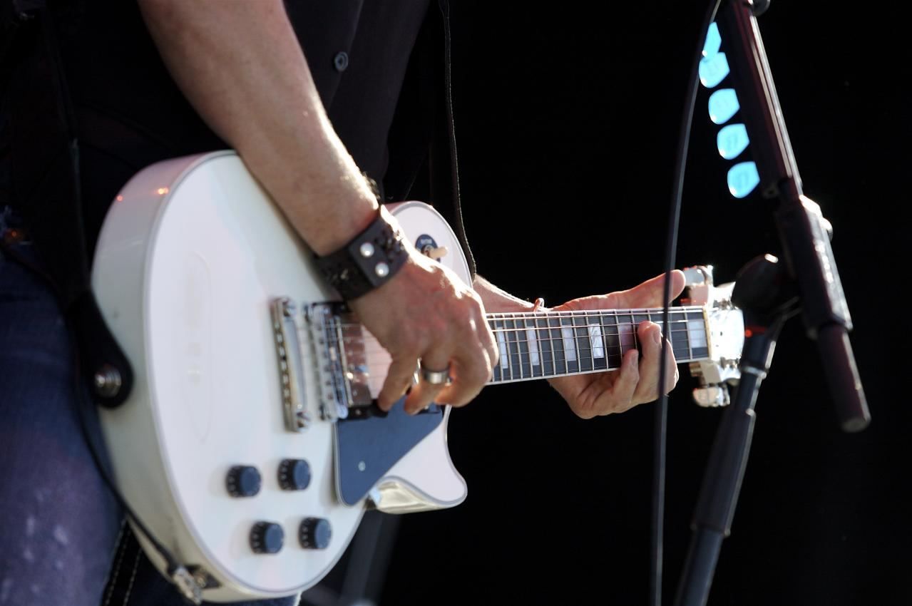
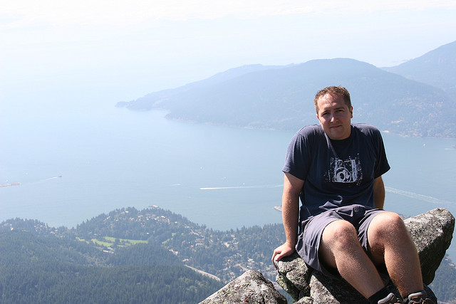

While I don't have a ton of experience making PCBs or designing hardware, I do have a small amount. During the COVID lockdowns I started playing with some tube amplifier designs, and to make them more interesting, I threw in some digital logic to control a display and what not.
At the time, my only hardware experience was using the Arduino platform. But since them I've played a tiny bit with both Raspberry Pi and the STM32 ecosystem. Arduino is great for tinkering around, but the general consens...
I knew before I even started that the digital 5.1 decoding aspect of this amplifier was going to be the one that was the most difficult. The first step was to even figure out what type of approach I might take to make it work at all....
The first order of business for the amplifier was figuring out how I was going to amplify the audio signals that go to the speakers. These power amplifiers dominate the power requirements for the entire project, so knowing the technology I was going to use and the requirements were necessary before being able to move forward with a transformer, for example.
I was originally thinking of pulling out my old university textbook on "Transistor Amplifier Design" and taking a stab at designing somethin...
As I mentioned before, it's been a 20 year dream of mine to build some type of amplifier that I can use at home and listen to music. 20 years ago I was lusting after a tube amplifier, and even started work on building one during the COVID lockdown. But the more I got into that project, the less enthused I was, mostly because I really have no use for a tube amplifier. In my current apartment I mostly hang out in the living room, and if I'm not listening to Spotify (or some other streaming service...

Now that the chassis is mostly assembled, and we have a power connector installed, the first order of business is to earth the chassis. As I mentioned previously, this serves the dual purpose of allowing the chassis to shield against electromagnetic radiation, but more importantly, protects the amplifier and its user against a potentially catastrophic fault.
Normally this type of fault involves a live wire or current going where it shouldn't. For example, a wire may slip loose at some point and ...

Once the chassis is assembled, the next step is to install the IEC power socket and fuse. The IEC socket is a standard size, but make sure you match it for whatever chassis you have. For safety reasons, it's also important to ensure that the mains power supply is fused, that way if there is some type of catastrophic failure, the fuse will limit the damage that can occur (which is important, especially if the failure is damaging you).
The fuse holder I'm using is 5x20mm chassis fuse holder. This ...

Once I had the idea of building an amplifier, the next step was to find a decent chassis for it. While I appreciate the idea that anything you build yourself is going to be special, not only did I want an amplifier that sounded good, I also wanted one that looked good. I remember reading Walter Isaacson's biography about Steve Jobs, and how Steve Jobs' father taught Steve that even though nobody could see the inside of a computer, or the back of a cabinet, it was important that it looked good as...

If you look at most photos of do it yourself (DIY) audio amplifiers, they almost always use screw terminals to connect everything together (and rarely have any sort of digital component - they are almost always two channel audio systems). While using screw terminals is pretty easy as a do-it-yourself'er, to me it seemed a bit inelegant.
For example, if you open a commercial amplifier, you're almost always going to see a bunch of neat interconnects between components. So I knew from the start I w...

In the winter of 2022, I decided to finally realize a 20 year dream by constructing, mostly from scratch, an audio amplifier to use in my living room. Back in my university days, I remember this guy in residence built a simple tube amplifier over the summer and brought it back to residence the following year. Everyone was in awe that something a person could make at home could sound so good.
Since around that time, I also have been dreaming about building a tube amplifier, and even bought most o...

One of my favourite outdoor activities for the spring and summer months is outdoor hiking. Over the years I've completed several long distance hikes, and plan to continue trying to get one in every year or so. Obviously with COVID19 things are still a bit up in the air, but it's still nice to work on planning some of the other ones.
Completed Hikes
West Coast Trail- BC, Canada - 75km
Camino Frances - Spain (2017) - 800km
West Highland Way - Scotland (2018) - 154km
Camino Finisterre - Spain (201...

Montgorock
Javea, España
Asistí a Montgorock en nombre de los organizadores en Javea, España, y estuve entre bastidores tomando fotografías durante dos días. Algunos de los talentos musicales que participaron en este evento fueron Indian Hawk, Desvariados, Santero y Los Muchachos, Los Labios, Sidecars, Badlands y Gran Cañón.
[ds_portfolio group="portfolio" name="montgorock" /]
BC Festival 150
Victoria, Canadá
Estuve entre bastidores en las celebraciones del 150 aniversario de la provinci...
Montgorock
Javea, Spain
I attended Montgorock on behalf of the organizers in Javea, Spain, and was backstage taking photographs for two days. Some of the musical talent that participated in this event were Indian Hawk, Desvariados, Santero y Los Muchachos, Los Labios, Sidecars, Badlands, and Gran Cañon.
[ds_portfolio group="portfolio" name="montgorock" /]
BC Festival 150
Victoria, Canada
I was backstage at the 150th anniversary celebrations of the province of British Columbia in Canada. Despite...
If you're looking for a talented WordPress developer or strategist with over a decade of real world experience (including building and selling a seven figure WordPress company), then this could be your lucky day.
I have organized three international WordPress conferences, two in Vancouver, Canada, and one in Whistler, Canada. I was the primary developer for the WPtouch mobile plugin, previously voted the #1 plugin for all of WordPress at the primary WordPress event, WordCamp San Francisco. Other...
Education
2006 - Master of Applied Science, The University of British Columbia, Electrical and Computer Engineering
I completed my master's degree in Electrical and Computer Engineering. My master's thesis proposed changes to the new H.264 video standard to increase efficiency and also a transition scalability scheme (H.264 extended layer on a MPEG-2 base layer) for cable operators. My supervisor for my degree was Dr. Panos Nasiopoulos, who was part of the original team that brought the digita...
You're interested in signing up for my newsletter? Great! But first, why don't I tell you a bit about myself, and what you can expect in terms of content going forward.
First, I've developed a lot of software. Previously I was the lead developer of a voice and video engine - basically the guts that went into applications like Skype, Yahoo!, etc. At its peak, the little media engine was used by over 100 million people to call friends and family over the internet.
Eventually I decided it was time ...
This privacy policy sets out how this website, DuaneStorey.com, uses and protects any information that you give when you use this website.
DuaneStorey.com is committed to ensuring that your privacy is protected. Should you be asked to provide certain information by which you can be identified when using this website, then you can be assured that it will only be used in accordance with this privacy statement.
DuaneStorey.com may change this policy from time to time by updating this page. This pol...
Duane Storey is an experienced photographer and photojournalist, and has covered many prestigious concerts and events in official media capacity.
Event Coverage and Media Accreditation
This following is a list of events and functions that Duane has covered in the official capacity as a photographer or a photojournalist.
Montgorock Music Festival, Jávia Spain, May 2018 - Press Representative & Photographer
Mazda Soul of Motion Event, 2015 - Press Representative
Calgary Stampede, 2010 - Medi...
If you're looking to get a hold of me, your best bet is to try emailing me. I can be reached at duanestorey at gmail dot com. You can also find me on Twitter as @DuaneStorey....

Duane Storey is a Vancouver-based photographer, researcher and web developer. Back in 2007, he was one of the first individuals in Vancouver to experiment with a process called High Dynamic Range photography. Since that time he has established himself as a sought-after event, wedding and concert photographer. In 2008, Duane was invited backstage to the Canadian Juno Awards in Calgary, Alberta, and photographed many celebrities during the night, including Leslie Feist and Michael Bublé. In 2009...